Essential guide
Merchants Worth Visiting
This guide shows where to find key merchants and what they sell. Some are unmarked, so you may want to place pins on your map. Unless noted otherwise, look for the yellow arrow in the screenshots.
⌕ Double-click any image to enlarge it, or focus it and press Enter to view the original.
Qinghe, Blissful Retreat: Tang Bao
Visit Tang Bao to unlock Morale Chant, an important Inner Way worth picking up.
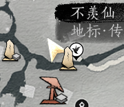
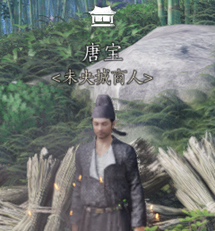
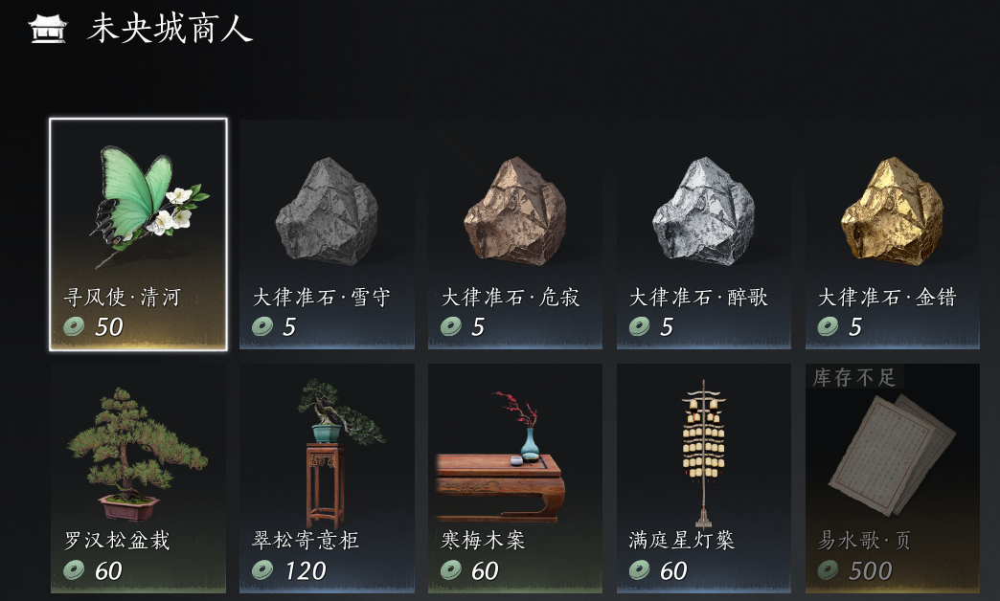
Kaifeng, Harborlink Crossing: Tang Lun
Tang Lun sells many of the Inner Way Notes you'll need. His shop is especially useful for upgrading Inner Ways early on.
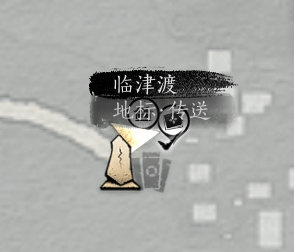
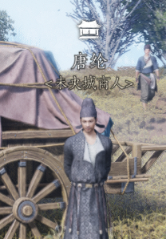

Kaifeng, Sundries Market: Zhao Feiyan's Private Vault
The vault is north of the Imperial Palace in Kaifeng and northeast of the Sundries Market waypoint, at the shop icon shown below. Sneak inside and speak to Zhao Feiyan to unlock the shop. You can spend Coin here on Inner Way Note chests and Lingering Melody.
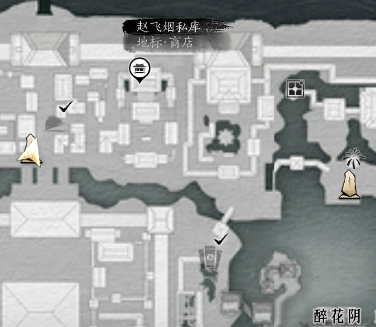
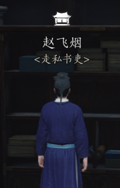
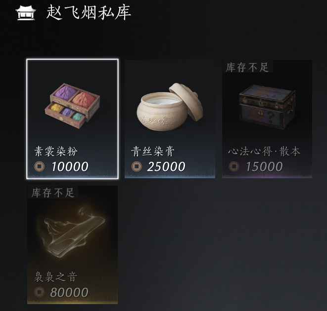
Hexi, Jade Gate Pass, Outside Whitecrown Fortress: Aba's Gold Panning Shop
Aba is near the Outside Whitecrown Fortress waypoint, at the shop icon on the map. She sells tier 81, 86, and 91 Retuning Stones and Re-attunement Stones, plus some Inner Way Notes for the Bamboocut-Dust path.

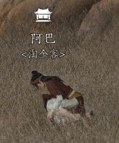
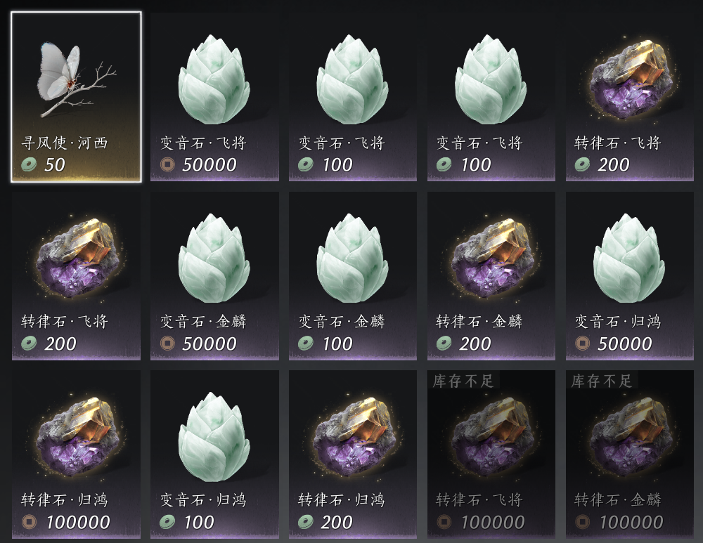

Hexi, Jade Gate Pass, Poplar Bazaar: Chen Qiqi
Chen Qiqi is a hidden merchant who takes Prismatic Essence. For collection tips, see our Prismatic Essence guide. Chen Qiqi is northeast of the Poplar Bazaar waypoint, at the black icon shown below. Look in a nearby tree. You can redeem 20 Inner Way Note chests at this shop.

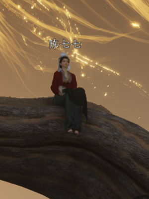

Hexi, Liangzhou Town, Skybrim Market: Can Lang's General Goods Stall
Can Lang sells Stonesplit-Strength and some general-purpose Inner Way Notes.


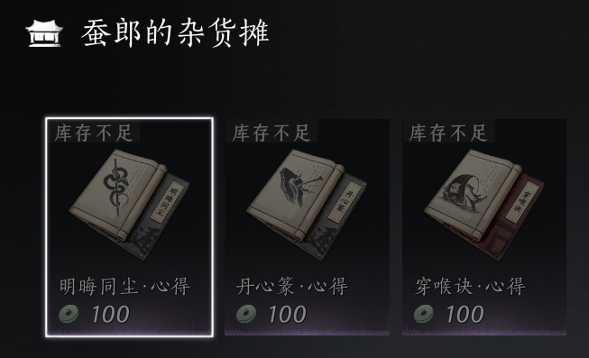
Hexi, Liangzhou Town, Skybrim Market: Sun Mengliang's General Goods Stall
Sun Mengliang sells useful tier 91 recipes for food buffs and recipes for building.
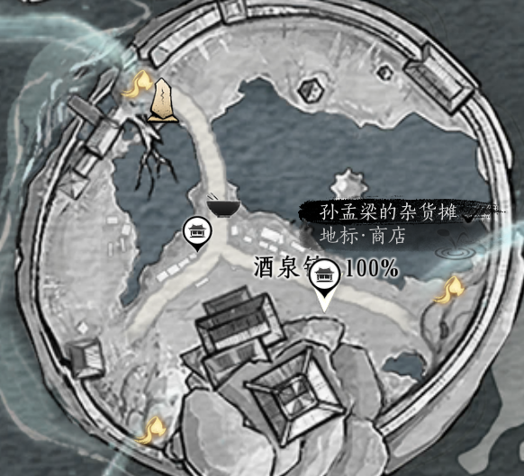
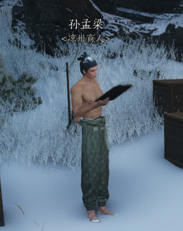

Hidden Mountain, Confluence Gazebo: Pangolin Peddler
The Pangolin Peddler is a vending machine-like device north of the Confluence Gazebo waypoint in Hidden Mountain. It sells tier 96 Retuning Stones and Re-attunement Stones, Inner Way Notes for the Bamboocut-Kite path, and some materials gathered in Hidden Mountain.

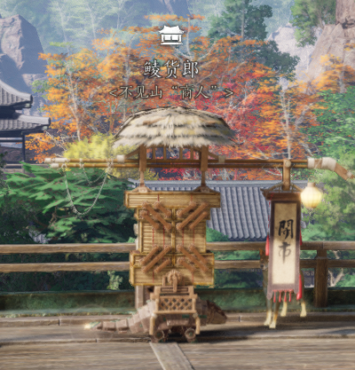

Hidden Mountain, Derndale: Ou Xi at the Derndale Shop
This is the only shop hidden inside an outpost. Travel to the Derndale waypoint, follow the road north, and fight your way into the outpost. Look for a tiny cave on the right side of the upper path. A seated puppet is inside.


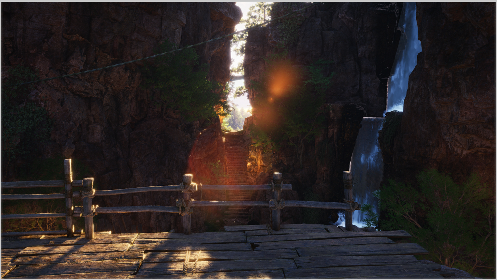

The screenshot shows the view looking out from the puppet's cave. The cave is on the upper level and faces a spot with a view of the waterfall. The outpost center is on the lower level.
Hidden Mountain, Exchange Quarter: Dazzling Shop
This hidden merchant is near the Exchange Quarter waypoint in Hidden Mountain. Look southwest toward the small shop, following the arrow in the map below. Inside is a monkey named Jiji. Trade drops from hunting Macaques in Hidden Mountain for Inner Way Note chests, Lingering Melody, special appearances, and more. You can also buy the Small Retchet needed for Inner Way Note chests with Coin after joining Mohist Hill and unlocking its Sect Shop.
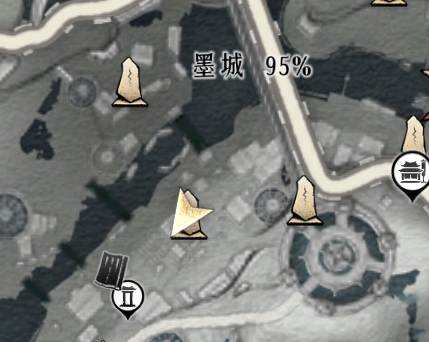